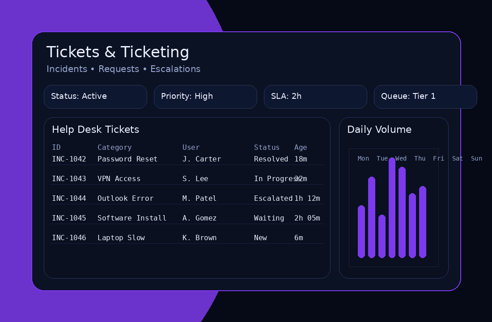
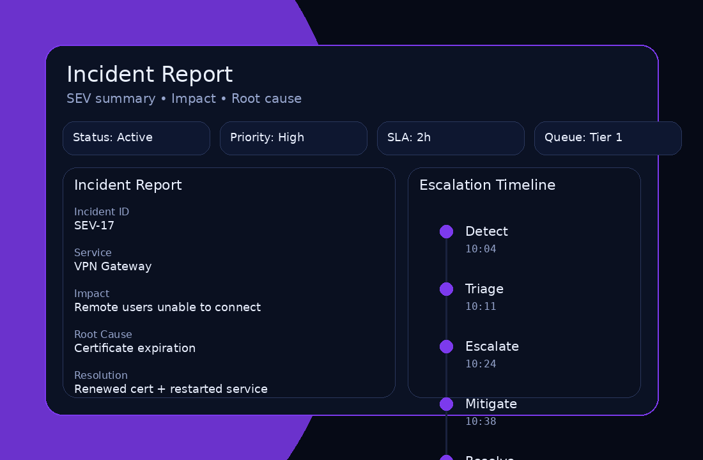
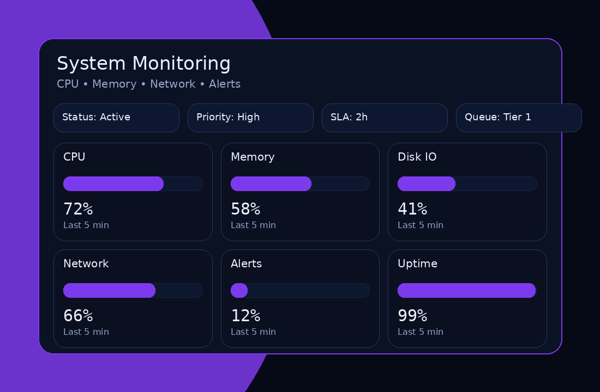

Tech Work
Experience supporting customers and teams through troubleshooting, ticket handling, documentation, and professional communication across multiple channels.
IT Support Visual Examples
Dashboards, ticketing, incidents, and monitoring snapshots.

Ticketing Dashboard (Open tickets, SLA, CSAT)

Incident Report (timeline & resolution)

System Monitoring & Alerts
Remote Troubleshooting
Diagnose issues via screen share/remote tools and restore service with minimal downtime.
Account & Access Support
Password resets, MFA help, permissions, and user onboarding/offboarding support.
Hardware & Software Support
Install/configure devices and apps, resolve driver/OS issues, and maintain stability.
Tools (examples)
- Ticketing systems (Zendesk/Jira/ServiceNow/Asana)
- Knowledge bases & SOPs
- Google Workspace / Microsoft 365 basics
- Browser + device troubleshooting
Strengths
- Customer empathy + calm communication
- Detail-oriented documentation
- Fast triage and prioritization
- Professional follow-up and status updates